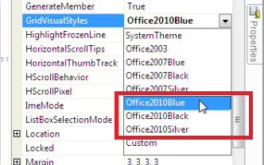
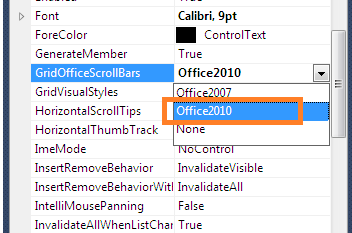
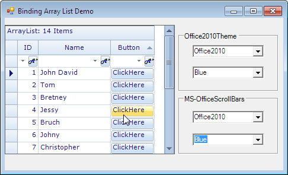
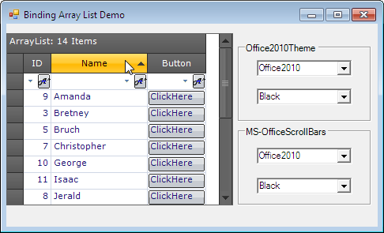
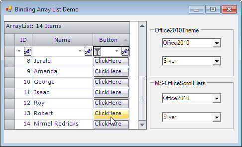

This feature provides support to have MS Office 2010 themes namely Blue, Black, and Silver) for the Windows Grids: GridControl, GridGroupingControl, GridDataBoundGrid, GridListControl, GridRecordNavigationControl and associated scrollbars.
To enable this support in grid, the following need to be handled:
· Apply Office 2010 Visual Style to Grid
· Enable Office 2010 Scrollbars
Applying Office2010 Visual Style to Grid
To apply Office 2010 Visual Style to Grid:
1. Create a grid enabled sample application.
2. Set the Office2010 theme to grid control using GridVisualStyles.

Figure 483: Set GridVisualStyles property to enable this theme.
Enabling Office2010 Scrollbars
To enable Office 2010 Scrollbars:
1. Set the GridOfficeScrollBars property to Office 2010.
2. Set the Office2010ScrollBarColorScheme property to Blue, Black or Silver.

Figure 484: Set GridOfficeScrollBars property to enable this theme.
Use Case Scenarios
Office2010Theme support for Windows Grids is useful for commercial applications in order to attract its users with inspiring UI look and feel.

Figure 485: Office2010 Blue theme

Figure 486: Office2010 Black theme

Figure 487: Office2010 Silver theme
Tables for Properties and Events
Properties
Table 12: Properties Table
|
Property |
Description |
Data Type |
|
GridVisualStyles |
· This is an Enumeration type property. · This property is used to get or set the VisualStyles (skins) like Office2010, Office2007, Office2003. |
Syncfusion.Windows.Forms.GridVisualStyles |
|
GridOfficeScrollbars |
· This is an Enumeration type property. · This property is used to get or set the Office like scrollbars. |
Syncfusion.Windows.Forms.OfficeScrollBars |
|
Office2010ScrollBarsColorScheme |
· This is an Enumeration type property. · This property is used to get or set the style of Office2010 scroll bars |
Syncfusion.Windows.Forms.Office2010ColorScheme |
Events
· The following event is used when applying the Office2010 theme to Essential Windows Grids.
|
Event |
Parameters |
Description |
|
ThemeChanged |
Object sender, EventArgs e |
Occurs when the ThemesEnabled property is changed. |
· The following events occur when the GridOfficeScrollBars are applied to Essential Windows Grids.
|
Event |
Parameters |
Description |
|
Office2010ScrollBarsColorSchemeChanged |
Object sender, EventArgs e |
Occurs when the Office2010ScrollBarsColorScheme property has changed. |
|
OfficeScrollBarsChanged |
object sender, GridGroupingControl.OfficeScrollBarsEventArgs e |
Occurs when the GridOfficeScrollBars property has changed. |
Adding Grid with Office2010 Theme to an Application
To add Grid with Office 2010 theme to an application:
1. Create a GridControl enabled application.
2. Set the GridVisualStyles property to apply Office2010 theme in GridControl.
The following sample code sets an Office2010 Black skin theme to the Essential Grid Control.
|
[C#] this.gridGroupingControl1.GridVisualStyles = GridVisualStyles.Office2010Black; |
|
[VB] Me.gridGroupingControl1.GridVisualStyles = GridVisualStyles.Office2010Black |
3. Set the GridOfficeScrollBars property to Office2010, to apply Office2010 like scroll bars in Essential Windows Grids.
4. Set the Office2010ScrollBarsColorScheme, to apply the color scheme of the scroll bars.
|
[C#] this.gridGroupingControl1.GridOfficeScrollBars = OfficeScrollBars.Office2010; this.gridGroupingControl1.Office2010ScrollBarsColorScheme = Office2010ColorScheme.Black; |
|
[VB] Me.gridGroupingControl1.GridOfficeScrollBars = OfficeScrollBars.Office2010 Me.gridGroupingControl1.Office2010ScrollBarsColorScheme = Office2010ColorScheme.Black |
Sample Link
To get the Schedule samples from the dashboard:
1. Open Essential Studio Dashboard by selecting Start -> All Programs -> Syncfusion -> Essential Studio <<Version Number>> -> Dashboard.
2. Select “Run Locally Installed Samples” from the Windows Forms drop-down list on the User Interface pane.
3. Expand “Grid samples” in the left panel of sample browser.
4. Expand “Appearance” subsection and select “Grid Style Demo”.
5. Click the “Run Sample” button in the right panel.
To open sample project:
1. Navigate to the following sample location in your system:
“<<Sample Installation Location>>\Syncfusion\Essential Studio\<<Version Number>>\Windows\Grid.Windows\Samples\2.0\Appearance\Grid Style Demo”
2. This location contains two sub folders CS and VB. You can open the sample projects from the respective folders based on your application language.